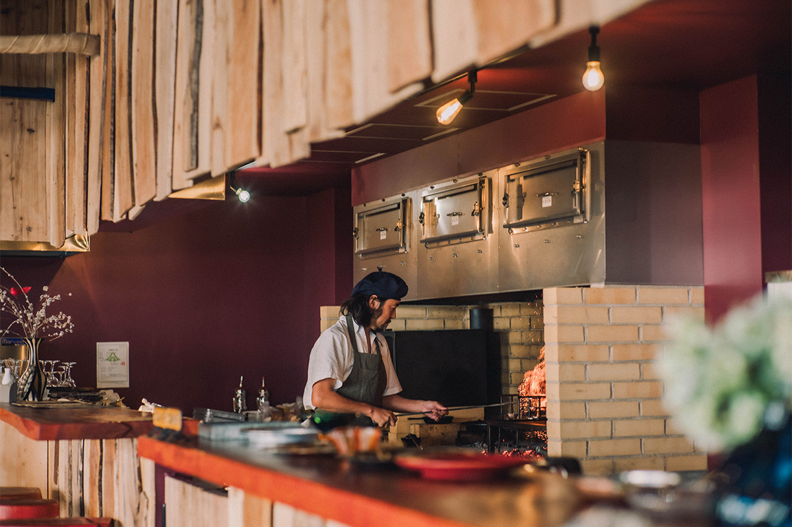
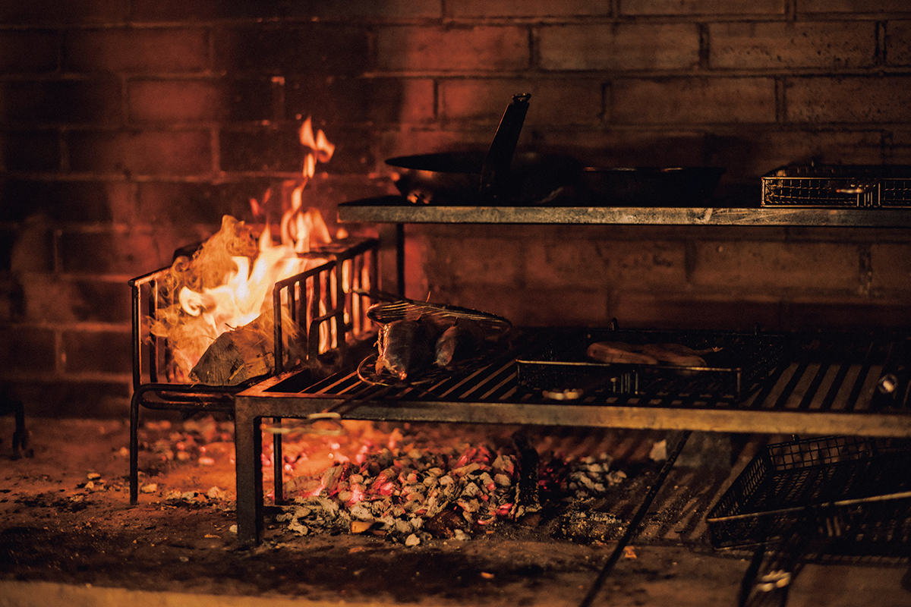
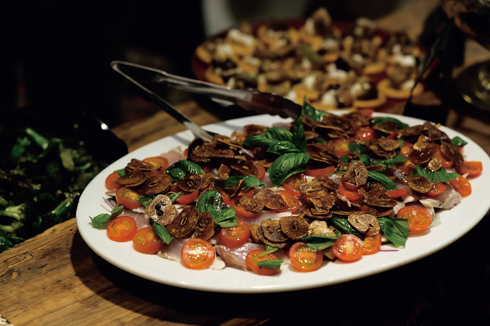
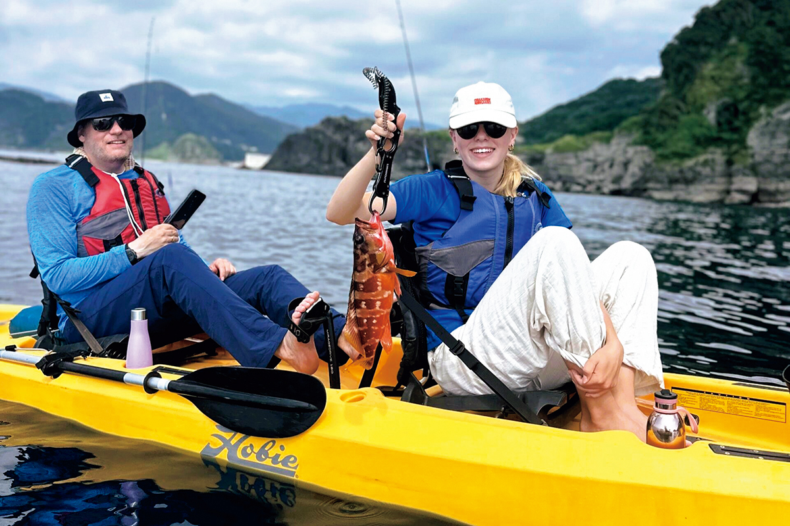
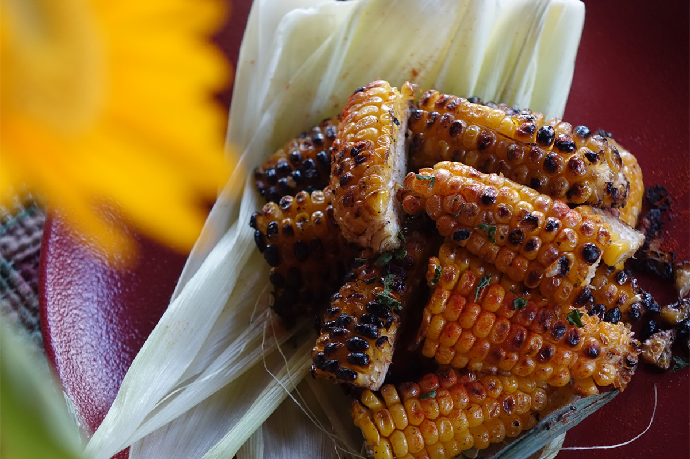

Префектура Сидзуока · Мацудзаки · еда
QUEBICO в Мацудзаки: ресторан на западе Идзу, где всё готовят на дровах из местного леса

В городке Мацудзаки на западном берегу полуострова Идзу работает ресторан, куда не проведён газ. Огонь для кухни, горячую воду и тепло здесь получают из дров, а часть ужина гости могут добыть сами.
Огонь
Кухня без газа
WOOD FIRED RESTAURANT QUEBICO стоит в Мацудзаки, небольшом городе на западном побережье полуострова Идзу. Ресторан открыла компания BASE TRES, которая строит в этих местах замкнутый круг: всё, что берут у округи, к ней же и возвращается. За эту модель компания несколько раз подряд получала награды трёх японских министерств.

Газ в QUEBICO не подведён вовсе. Тепло для плиты, горячая вода и отопление получают из местной древесины, а золу после готовки отдают окрестным фермерам: ею улучшают почву на полях. Ресторан сам обеспечивает себя энергией, и гостю подают блюда, приготовленные на огне из ближнего леса.

Сбор
Ужин, который добываешь сам
Отдельная причина приехать сюда это «фуражинг», то есть сбор дикой еды. Гости уходят в горы и к морю, своими руками собирают травы и дикие растения, ловят рыбу, а потом всё это подают им в виде трапезы из нескольких блюд. Такой опыт выпадает нечасто, и упускать его не стоит.


WOOD FIRED RESTAURANT QUEBICO
- Адрес
- префектура Сидзуока, уезд Камо, Мацудзаки, Эна, 225-4
- Телефон
- +81 50-8894-8682
- Часы работы
- обед 12:00–14:30, ужин 18:00–21:00
- Выходные
- понедельник, вторник
- Сайт
- quebico.jp
BASE TRES
- Телефон
- +81 558-36-3701